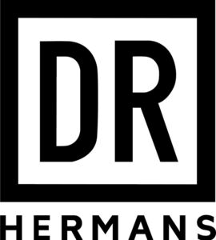

Trade Mark Journal No.2025/039 26 September 2025
WO0000001862576 (3,5)
Office of origin: Germany
Date of International Registration:16 February 2025
Date of designation in the UK:
16 February 2025

International priority date claimed: 17 August 2024
(Germany)
- Class 3
- Bleaching preparations and other substances for laundry use; cleaning, polishing, scouring and abrasive preparations; soap; perfumery; ethereal oils; cosmetics; hair lotions; dentifrices; hair preparations and treatments; hair moisturisers; hair preservation treatments for cosmetic use; cosmetic hair regrowth inhibiting preparations; hair straightening preparations; hair care masks; non-medicated hair treatment preparations for cosmetic purposes; preparations for setting hair; hair chalks; hair balsam; hair dyes; hair tinting preparations; hair nourishers; hair dyes; hair serums; japanese hair fixing oil (bintsuke-abura); shampoo-conditioners; hair rinses [for cosmetic use]; body shampoos; hair fixers; preparations for protecting coloured hair; hair glaze; hair protection creams; depilatory preparations; preparations for setting hair; hair strengthening treatment lotions; hair tonic; hair lotions; hair balm; hair emollients; hair colour removers; hair spray; adhesives for false eyelashes, hair and nails; hair creams; hair mascara; hydrogen peroxide for use on the hair; hair conditioners; oil baths for hair care; hair spray; hair pomades; hair mousse; preparations for protecting the hair from the sun; hair bleaching preparations; mousses [toiletries] for use in styling the hair; hair gel; products for protecting coloured hair; shaving preparations; hair preparations and treatments; cosmetic preparations for the hair and scalp; oils for hair conditioning; hair waving preparations; hair mousse; hair powder; hair texturizers; hair lotions; hair styling waxes; hair straightening preparations; colouring lotions for the hair; styling pastes for hair; hair waving preparations; hair nourishers; hair desiccating treatments for cosmetic use; hair treatment preparations; neutralizing hair preparations; hair masks; cosmetics for the use on the hair; organic cosmetics; functional cosmetics; natural cosmetics; non-medicated cosmetics; emollient preparations [cosmetics]; cosmetic preparations for eyelashes; cosmetics and cosmetic preparations; shampoos for animals [non-medicated grooming preparations]; non-medicated soaps; non-medicated skin serums; scalp treatments (non-medicated -); dermatological creams [other than medicated]; anti-aging serums; facial serum for cosmetic use; tonics [cosmetic]; facial toners [cosmetic]; micellar water; lavender water; toners for cosmetic purposes; soaps and gels; nail primer [cosmetics]; skin care lotions [cosmetic]; cosmetics in the form of gels; skin, eye and nail care preparations; body and facial gels [cosmetics]; aloe vera gel for cosmetic purposes; cosmetics containing keratin; cosmetics for children; cosmetics containing hyaluronic acid; cosmetics containing panthenol; bath gel; balms, other than for medical purposes; non-medicated creams.
- Class 5
- Pharmaceutical and veterinary preparations; sanitary preparations for medical purposes; dietetic preparations adapted for medical use; food for babies; plasters, materials for dressings; medical dressings; material for stopping teeth, dental wax; disinfectants; preparations for destroying noxious animals; fungicides; herbicides; medicinal hair growth preparations; hair growth stimulants; lice treatment preparations [pediculicides]; medicinal hair growth preparations; medicated hair lotions; pharmaceutical preparations for hair care; medicated shampoos; medicated hair care preparations; medicated hair lotions; biological reagents for veterinary use; biological preparations for veterinary purposes; dietetic substances adapted for medical use; capsules for medicines; medicinal oils; dietetic food preparations adapted for medical use; biochemical preparations for medical use; biological preparations for medical purposes; dietetic beverages adapted for medical purposes; medicines for human purposes; biotechnological preparations for medical use; cannabis for medical purposes; biochemical preparations for veterinary use; chemical reagents for medical or veterinary purposes; castor oil for medical purposes; caffeine preparations for medical use; chemical preparations for medical purposes; biological reagents for medical use; pediculicidal shampoos; medicated shampoos for pets; medicated dry shampoos; human growth hormone; medicated body gels; antibacterial gels; anti-inflammatory gels; skin care lotions [medicated]; aloe vera gel for therapeutic purposes; gels for dermatological use; antibiotic dermatological products; dermatological pharmaceutical products; medicated ointments for treating dermatological conditions; dermatological preparations; naturally derived antimicrobials for dermatological use; anti-fungal dermatological preparations for use on the nails; antimicrobials for dermatologic use; pharmaceutical preparations for use in dermatology; creams for dermatological use; dermatological pharmaceutical substances; elixirs for psoriasis; pharmaceutical preparations for treating dandruff; pharmaceutical preparations for dental use; medicated lotions for the hands; preparations for use in naturopathy; herbal creams for medical use; medicated lotions; plant and herb extracts for medicinal use; medical preparations; herbal compounds for medical use; herbal preparations for medical use; cultures for medical use; herbal extracts for medical purposes; medicated hand wash; pharmaceutical preparations for veterinary use; nose drops for medical purposes; sandalwood oil for medical, pharmaceutical and veterinary purposes; medicated preparations for skin treatment; medicinal ointments; medicated skin creams; nasal cleaning preparations for medical purposes; herbal sprays for medical use; nutritional supplements; food for medically restricted diets; phytotherapy preparations for medical purposes; body creams [medicated]; medicated skin lotions; tisanes [medicated beverages]; medicinal preparations and substances; food for medically restricted diets; herbal extracts for medical purposes; nutritional supplements for veterinary use; medicinal infusions; adhesive tapes for medical purposes; mixed biological preparations for medical purposes; medicated ointments for application to the skin; herbal teas for medicinal purposes; dietary supplements for humans not for medical purposes; nasal sprays for medical purposes; mineral food preparations for medical purposes; medicinal ointments; pheromones for medical use.
Dr. Martin Hermans
Representative: Rechtsanwalt Jürgen Albrecht, Bleichstr. 63, 40878 Ratingen, GERMANY